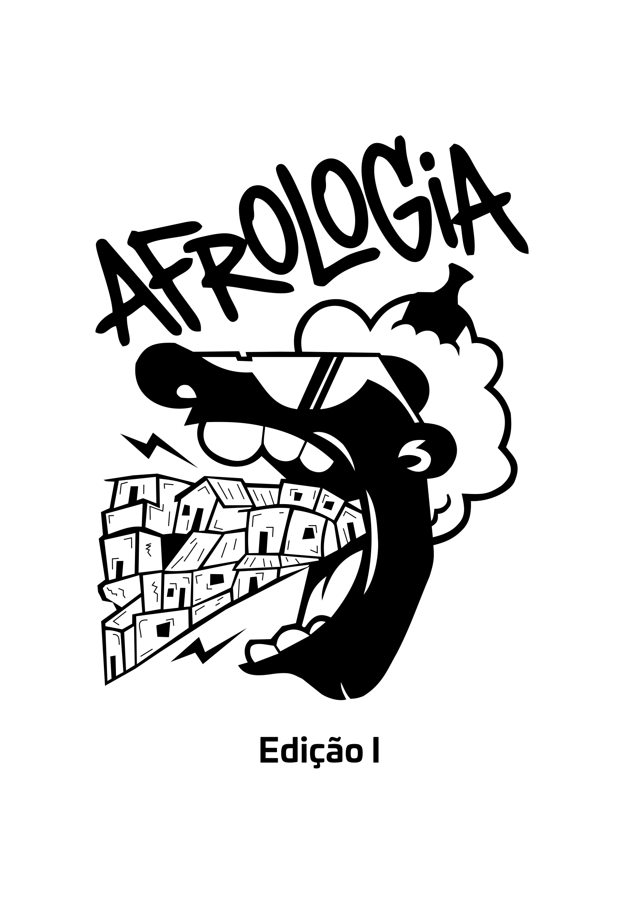
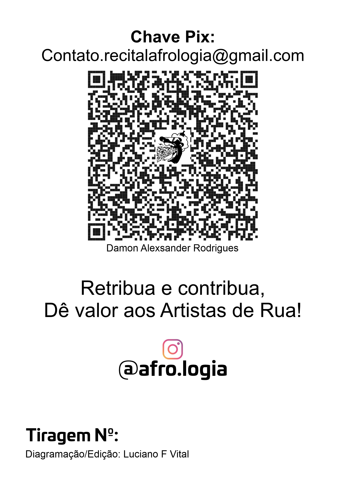

O Afrologia faz apologia ao consumo sem moderação de poesia. Axé ao AFROLOGIA.
ConheçaPOETAS MARGINAIS
-

@lucas.marafa
Lucas Marafa
Poeta marginal. Slam nas ruas de Recife, Região Metropolitana. A voz que ecoa as vivências da cidade.
-

@j.falik
Juan Falik
Voz poética do Nordeste. Slam, rima e resistência. Transformando o cotidiano em arte e protesto.
-

@joaobocadnego
João Boca de Nego
Poesia marginal nas praças. Recife é meu palco. Levando a cultura das ruas para o centro das atenções.
-

@magoderuim_
Mago de Ruim
Afrologia é magia. Poesia como resistência. Versos que quebram barreiras e criam pontes.
-

@chicopretozn
Chico Preto
Poeta das ruas. Slam e poesia performática. A força da rima construindo novas narrativas.
Edição impressa
Zine AFROLOGIA
O Zine Afrologia é uma coletânea de poesias marginais, trazendo a essência da cultura urbana de Recife.


Leve essa experiência com você.
Comprar o Zine